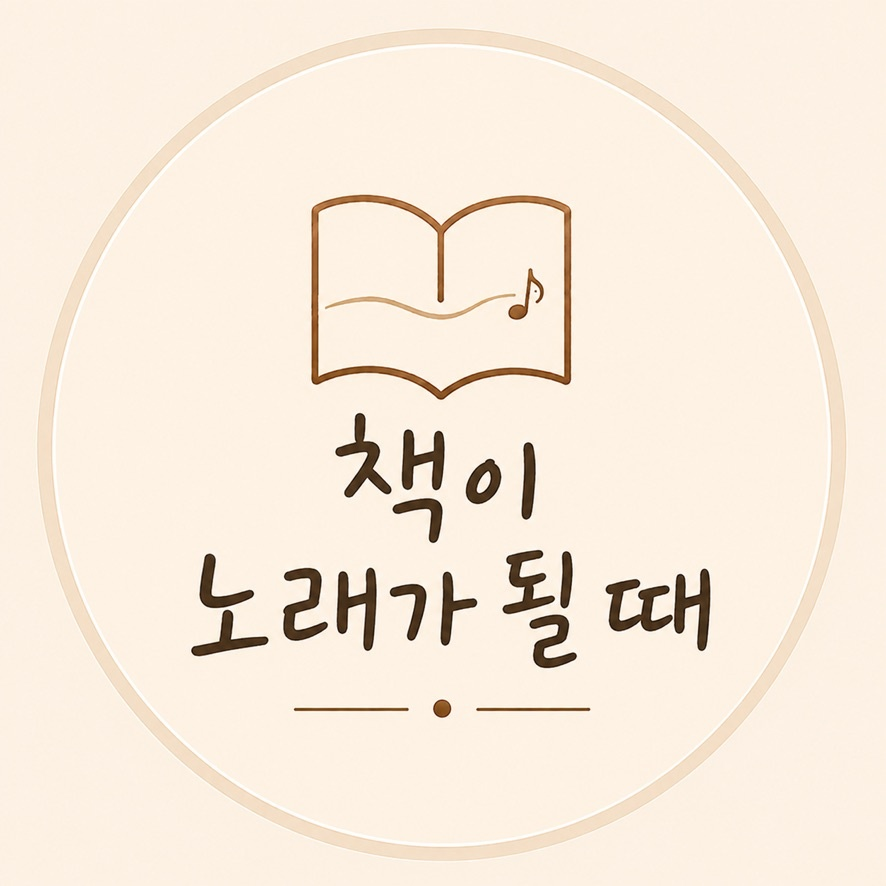

BOOKS INTO SONGS
읽고 남은 마음을 노래로 기록합니다.
책을 요약하지 않습니다. 읽고 멈춰 서게 된 질문을 생활의 언어로 쓰고, 오래 곁에 둘 수 있는 노래로 기록합니다.
- 0
- 노래
- 0
- 책
- 가사·해석
- 한곳에

읽기에서 시작해
노래로 오래 남기는 기록
MUSIC LIBRARY
음악 보관함
제목, 책 또는 질문으로 노래를 찾고 선택해 보세요.
찾는 노래가 없습니다.
검색어를 줄이거나 재생 상태를 ‘전체 노래’로 바꿔 보세요.
LYRICS & MEANING
가사와 의미
한 곡의 생활 장면이 책의 질문과 어떻게 이어지는지 살펴봅니다.
05번째 노래
노래 제목
ABOUT THE PROJECT
책을 덮은 뒤에도 질문이 곁에 남도록
〈책이 노래가 될 때〉는 한 권의 내용을 대신 정리하는 곳이 아닙니다. 책과 대화하며 건져 올린 하나의 질문을 쉬운 가사와 노래로 다시 만나게 하는 음악 아카이브입니다.
“책을 요약하지 않습니다. 한 권이 남긴 질문을 노래합니다.”
- 01읽고
마음에 오래 남은 대목을 찾습니다.
- 02묻고
오늘의 삶과 이어지는 질문을 고릅니다.
- 03노래하고
첫 번에 이해되는 생활의 언어로 씁니다.
- 04다시 듣습니다
가사와 그 의미를 함께 기록합니다.